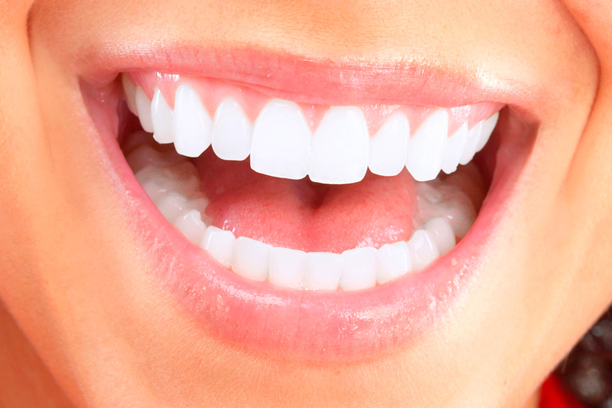

သင့်သွားများကျန်းမာစေရန် ရှောင်ရမည့်အချက်များ

အသည်းကောင်းမှ ပွဲတောင်းနိုင်မယ် ဆိုသလို သွားကောင်းမှ အစားစားရာမှာ ကောင်းကောင်းစားနိုင်မှာပါ။
သွားနာတာ၊ သွားကိုက်တာကျင်တာ၊ နဲ့တာ၊ ပဲ့တာ စသဖြင့်ဖြစ်ပါက အစားအသောက်စားသောက်ရာမှ စားချင်သလောက် သက်တောင့်သက်တာ အရသာရှိရှိကောင်းကောင်းမစားနိုင်ဘဲ စားရသောက်ရခက်တာ ဝါးရခက်တာတွေ ဖြစ်နိုင်ပါတယ်။
ဒါကြောင့် အစားအသောက်စားသောက်ရာမှာ အရေးကြီးတဲ့သွားတွေကို မထိခိုက်အောင် ဘယ်အချက်တွေကို ရှောင်ရမလဲဆိုတာကို သိသလောက်ရေးသားတင်ပြချင်ပါတယ်။
၁။ လက်သည်း ကိုက်ခြင်း
ဆယ်ကျော်သက်အရွယ်နဲ့ လူငယ်ပိုင်းတွေမှာကျ လက်သည်းကိုက်တဲ့အကြောင်းရင်းက စိတ်ဖိစီးမှုများတာ၊ စိတ်ပူပန်သောကများနေတာတွေကြောင့် စိတ်ဖြေဖျောက်မှု ထွက်ပေါက်အနေနဲ့ လုပ်ရာကနေ လက်သည်းကိုက်တဲ့အကျင့် စွဲသွားတာပိုဖြစ်နိုင်ခြေများပါတယ်။
လက်သည်းကိုက်တဲ့ အကျင့်ရဲ့ နောက်ဆက်တွဲဆိုးကျိူးတွေကတော့ အများကြီးပါ။ လက်သည်းကို သွားနဲ့ကိုက်တဲ့အတွက် လက်သည်းတွေဟာ မျက်နှာပြင်မညီတော့ဘဲ တွန့်ခေါက်တာ၊ ချိူင့်တာ၊ လှိုင်းထတာ၊ ပဲ့တာ၊ ရွဲ့တာ၊ စောင်းတာ၊ လက်စွယ်ငုတ်တာ၊ လက်သည်းမှိုစွဲတာ တွေဖြစ်နိုင်သလို သွားတွေဟာလည်းလက်သည်းကိုက်တာကြာလာနဲ့အမျှ သွားတွေပဲ့တာ၊ ယိုင်တာ၊ သွားဖုံးတွေရောင်ရမ်းတာတွေပါ ဖြစ်ပါတယ်။
ဒါကြောင့် လက်သည်းကိုက်ခြင်းအကျင့်ကို ဖျောက်ဖို့ ရှောင်ဖို့လိုပါတယ်။
၂။ အချဉ်ဓါတ်များတဲ့ အစားစာတွေကို အစားများခြင်း
အချဉ်ဓါတ်က သွားကြံ့ခိုင်ဖို့အတွက် အထောက်အကူပြုတယ်ဆိုပေမယ့် လိုတာထက်ပိုများတဲ့အခါမှာ သွားမှာရှိတဲ့ကြွေလွှာတွေကို ပျက်စီးစေပြီး သွားကျန်းမာရေးကို ထိခိုက်စေနိုင်ပါတယ်။
သံပုရာသီး အစိတ်ကို ဝါးစားခြင်း၊ ရှောက်သီးသုပ်စားခြင်း၊ သနပ်ချဉ်၊ မုန်ညှင်းချဉ်စားခြင်း စတဲ့အချဉ်ဓါတ်ကဲတာတွေကို မကြာခဏ စားမိလေ့ရှိပါက ထိုသို့စားနေခြင်းကို လျှော့ဖို့လိုပါတယ်။
၃။ သွားတိုက်တဲ့အခါ သွားကိုကြမ်းတမ်းစွာ တိုက်ခြင်း
တချို့သူတွေအနေနဲ့ သွားတိုက်တဲ့အခါမှာ ပိုပြောင်ပိုသန့်အောင် ဆိုပြီး သွားပွတ်တံကို အားထည့်ပြီး ကြမ်းကြမ်းတမ်းတမ်းတိုက်တတ်ပါတယ်။
ကြမ်းကြမ်းတိုက်၊ အားထည့်တိုက်တိုင်း သန့်ရှင်းတာမဟုတ်ပါ။ စနစ်တကျတိုက်မှသာ သွားကျန်းမာမှာပါ။
သွားကိုကြမ်းတမ်းစွာ တိုက်ခြင်းဖြင့် သွားကြွေလွှာနဲ့ သွားဖုံးတွေ ထိခိုက်ပျက်စီးတာ၊ သွားအခေါင်းပေါက်ဖြစ်တာမျိုးတွေထိ ဖြစ်နိုင်ပါတယ်။
ဒါကြောင့် သွားတိုက်တဲ့အခါ တအားကြမ်းတမ်းစွာ တိုက်တာ၊ သွားပွတ်တံကြမ်းတာသုံးပြီး တိုက်တာတွေကို ရှောင်ပြီး နူးညံ့တဲ့ သွားပွတ်တံကိုသုံးကာ စနစ်တကျ တိုက်ဖို့လိုပါတယ်။
၄။ အချိုရည်တွေ အသောက်များခြင်း၊ အချိုစားများခြင်း
အချိုရည်တွေ၊ ချိုတဲ့အစားစာတွေမှာပါတဲ့ သကြားဓါတ်ဟာ ဘက်တီးရီးယားတွေကို သွားအတွင်းမှာ ပေါက်ပွားစေနိုင်ပြီး သွားတွေကိုလည်း အရောင်ပြောင်းစေကာ သွားကျန်းမာရေးကို ထိခိုက်စေနိုင်ပါတယ်။
၅။ ရေခဲတုံးစုပ်ခြင်းနဲ့ ရေခဲတုံးကိုက်ခြင်း
အထူးသဖြင့်နွေရာသီမှာ ရေခဲတုံးလေးတွေမြင်ရင် ကျွန်တော်တို့အများစုအနေနဲ့ လျှာပေါ်တင်တာ၊ ကိုက်ဝါးတာတွေကို လုပ်တတ်လေ့ရှိပါတယ်။
ဒီလိုလုပ်ခြင်းဟာ သွားကိုထိခိုက်စေမယ်လို့ အများစုအနေနဲ့ ထင်ထားမိမှာမဟုတ်ပါဘူး။
သုတေသနတွေအရ လေ့လာကြည့်တဲ့အခါ ရေခဲတုံးရဲ့အအေးဓါတ်နဲ့ မာကျောမှုဟာ ကျွန်တော်တို့ရဲ့သွားတွေကို ဆိုးဝါးစွာထိခိုက်ပျက်စီးစေပြီး သွားနဲ့တာ၊ သွားမခိုင်တာ၊ ကျိုးလွယ်တာတွေကို ဖြစ်စေနိုင် ကြောင်းသိရပါတယ်။
၆။ သွားတွေကို အစာဝါးရာအပြင် တခြားနေရာတွေမှာပါ အသုံးချခြင်း
လူအများစု အနေနဲ့ သွားတွေကိုအစာဝါးဖို့အပြင် တခြားနေရာတွေမှာပါ သုံးတတ်ကြပါတယ်။ ဒီလိုသုံးတာကိုလည်း သတိမမူမိတတ်ကြပါဘူး။
အများအားဖြင့် တိပ်ဖြတ်ရာမှာ၊ ပုလင်းအဖုံးဖောက်ရာမှာ၊ အပ်ချည်ကြိုးဖြတ်ရာမှာ၊ မုန့်ထုတ်ဖောက်ရာမှာ ကတ်ကြေး၊ ဖောက်တံ၊ ဓါး စတဲ့အရာတွေကို ရှာသုံးရမယ့်အစား အလွယ်တကူ သွားနဲ့ ကိုက်ဖြတ်၊ ကိုက်ဖောက်တာမျိုးတွေ လုပ်တတ်ကြပါတယ်။
ဒီလိုတွေမလုပ်သင့်ပါဘူး။ ကျွန်တော်တို့ရဲ့ သွားတွေဆိုတာဟာ အစာစားဝါးဖို့အတွက်ပဲ အသုံးချသင့်တာပါ။
မသုံးသင့်တဲ့နေရာမှာ သုံးခြင်းဖြင့် သွားတွေရဲ့ ကြံ့ခိုင်မှုကို ထိခိုက်စေပြီး သွားတွေကျိုးလွယ်တာ၊ ပျက်စီးလွယ်တာတွေဖြစ်နိုင်ပါတယ်။
၇။ သွားကျိတ်ခြင်း
သွားကျိတ်တယ်ဆိုတာဟာ အပေါ်သွားတွေနဲ့ အောက်သွားတွေကို တင်းတင်းဖိကြိတ်တာ (အပေါ်မေးရိုးနဲ့ အောက်မေးရိုးကို တင်းတင်းဖိကြိတ်ပြီး လှုပ်ရှားတာ) မျိုးကို ဆိုလိုတာပါ။
အံကျိတ်တယ်လို့လည်း ခေါ်ကြပါတယ်။
အများစုက သွားကျိတ်တာကို အိပ်တဲ့အချိန်မှာပဲ ဖြစ်တယ်လို့ထင်ကြပါတယ်။ ဒါပေမယ့် လေ့လာချက်တွေအရ သွားကျိတ်ခြင်းဟာ နိုးနေတဲ့အချိန်တွေမှာလည်းဖြစ်ပါတယ်။
ဘာလို့ သွားကျိတ်ခြင်းဖြစ်တယ်ဆိုတဲ့ အကြောင်းကိုတော့ တိကျသေချာစွာပြောဖို့မလွယ်ပါ။
သို့သော် သုတေသနတွေအရ
– စိတ်ဖိစီးစရာများတဲ့သူတွေ
– စိတ်တိုလွယ်တတ်တဲ့သူတွေ၊ သူများနဲ့ပြိုင်ချင်စိတ်ပြင်းပြတတ်တဲ့ သူတွေ
– သွားစပေါက်တဲ့အရွယ်၊ မေးရိုးဖွံ့ဖြိုးတဲ့အရွယ်မှာ ရောက်နေတဲ့ကလေးတွေ
– အရက် ဆေးလိပ်သောက်တဲ့သူတွေ
– ကဖင်းဓါတ်ပါတဲ့ အစားသောက်တွေ စားသောက်များတဲ့သူတွေ
– စိတ်ဆေးတွေ သောက်နေရတဲ့သူတွေ
– မိသားစုမျိုးရိုးထဲမှာ သွားကျိတ်တတ်တဲ့သူ ရှိတဲ့သူတွေ
– ပါကင်ဆန်ရောဂါ၊ သတိမေ့ရောဂါ၊ အတက်ရောဂါစတဲ့ ရောဂါအခံတခုခုရှိတဲ့သူတွေ
– အိပ်ပျော်နေစဉ်မှာ အိပ်မက်ဆိုးတွေမက်လေ့ရှိသူတွေ၊ တအားဟောက်တဲ့သူတွေမှာဆိုရင် သွားကျိတ်ခြင်းဟာ ပိုဖြစ်နိုင်ပါတယ်။
သွားကျိတ်ခြင်းကြောင့် ဘေးမှာအိပ်တဲ့သူကို အိပ်ရေးပျက်စေနိုင်ပါတယ်။
သွားကျိတ်ခြင်းရဲ့ နောက်ဆက်တွဲဆိုးကျိုးအနေနဲ့
သွားကြွေလွှာတွေထိခိုက်ပျက်စီးပြီး သွားတွေတိုလာတာ၊ ပြားလာတာ၊ ကျိုးပဲ့လွယ်တာ၊ သွားတွေကျင်တာ၊ မေးရိုးကြွက်သားတွေပါတင်းပြီးနာကျင်တာ၊ နားထင်ကိုက်တာတွေ ဖြစ်နိုင်ပါတယ်။
သွားခဏခဏကျိတ်ခြင်းကြောင့် တချို့သွားတွေဟာ သွေးသလိုဖြစ်ပြီး ချွန်ထက်လာတတ်ပါတယ်။ ထိုချွန်ထက်တဲ့သွားတွေကြောင့် ပါးစောင်အတွင်းတွေ၊ လျှာတွေမှာခိုက်မိပြီး အနာခဏခဏဖြစ်တာ၊ ကြာလာရင် ခံတွင်းကင်ဆာဖြစ်တာတွေပါ ဖြစ်နိုင်ပါတယ်။
၈။ သွားကြားထိုးတံသုံးခြင်း
ကျွန်တော်တို့ဆီက လူအတော်များများဟာ စားပြီးသွားကြားညှပ်တဲ့အခါ သွားကြားထိုးတံကို အများဆုံးသုံးပြီး သွားကြားထဲညှပ်နေတဲ့ အစားစာအကြွင်း အကျန်အစတွေကို ကလော်ထုတ်တတ်ကြပါတယ်။
သွားကြားထိုးတံခဏခဏသုံးခြင်းဟာ သွားကြွေလွှာတွေကို ထိခိုက်ပျက်စီးစေပြီး၊ သွားတွေကြားဟသွားတာ၊ သွားတွေပွန်းပဲ့တာ၊ သွားဖုံးထိခိုက်ဒဏ်ရာရတာတွေကို ဖြစ်စေနိုင်ကြောင်း သုတေသနတွေအရ သိရပါတယ်။
Source-Dr 528